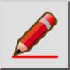

โหมดร่าง
แถบเครื่องมือ / ไอคอน:


เมนู: มุมมอง > โหมดร่าง
ทางลัด: D, F
คำสั่ง: draftmode | df
แถบเครื่องมือ / ไอคอน:


สลับโหมดร่างของแบบวาดปัจจุบัน ในโหมดร่าง เส้นทั้งหมดจะแสดงด้วยความกว้าง 1 พิกเซล ข้อความขนาดใหญ่จะถูกทำให้เรียบง่าย ใช้โหมดร่างหากแบบวาดของคุณมีขนาดใหญ่มากและใช้เวลานานในการวาดใหม่